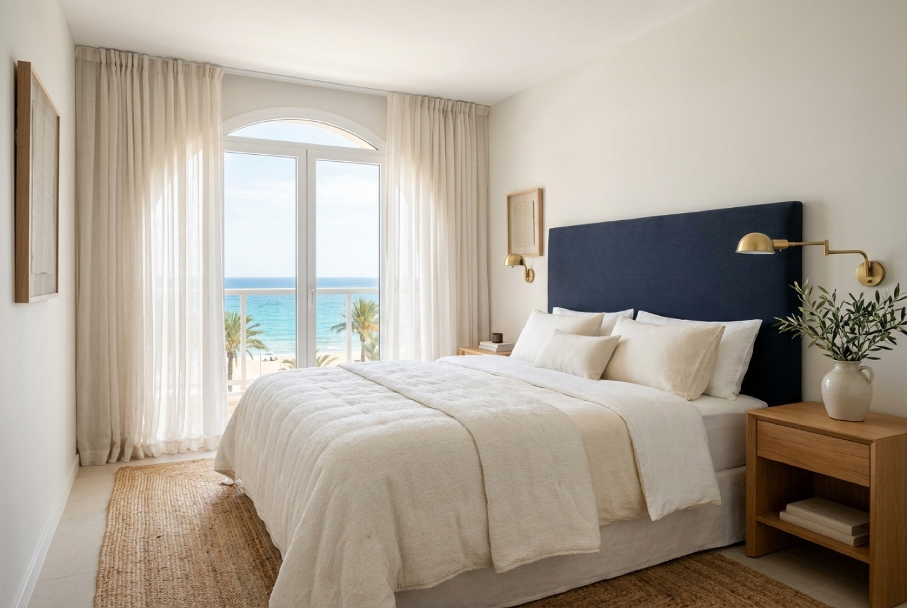
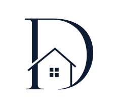

Domia Stays
Información para huéspedes
Todo lo necesario para una estancia sin complicaciones: llegada, lo esencial y cómo contactarnos.
Cada detalle, cuidado
Kit de bienvenida incluido
Básicos seleccionados de marcas premium, suministros y una guía personal de la Costa Blanca.
Estándares premium
Ropa de cama de calidad hotelera, amenities de marca y una vivienda lista antes de cada llegada.

Preguntas frecuentes
La entrada es entre las 17:00 y las 20:00, y la salida hasta las 10:00. ¿Llegas fuera de ese horario? Escríbenos por WhatsApp y haremos lo posible por organizarlo.
La mayoría de los alojamientos tienen cerradura inteligente o caja de seguridad con un código que enviamos antes de la llegada; en algunos te recibimos en persona. Recibirás instrucciones claras el día antes de la entrada.
Se requiere una fianza reembolsable y un documento de identidad en la entrada, conforme a la ley española. La fianza se devuelve tras la salida, una vez comprobado que el alojamiento queda en buen estado (normalmente en pocos días).
Sí. La ley española exige el registro de huéspedes; lo hacemos digitalmente antes o al llegar, para que cumplas la normativa sin preocuparte de nada.
Todos los alojamientos tienen Wi-Fi rápido y aire acondicionado. El nombre de la red y la contraseña están en tu guía de bienvenida y en el apartamento.
Algunos alojamientos admiten mascotas según las normas del propietario; pregúntanos antes de reservar y te asignaremos el apartamento adecuado.
WhatsApp es lo más rápido: una persona real y local responde de día o de noche en el +34 666 64 72 45. También puedes escribir a info@domiastays.com.
Conviene saber
Cómo llegar
El aeropuerto de Alicante-Elche (ALC) está a unos 45 minutos. Podemos organizar un traslado si lo solicitas.
Normas del alojamiento
Respeta el horario de descanso de la comunidad, sin fiestas, y deja el alojamiento como lo encontraste. Las normas completas están en cada apartamento.
Emergencias
112 para cualquier emergencia. ¿Algo no urgente con el apartamento? Escríbenos y lo resolvemos rápido.